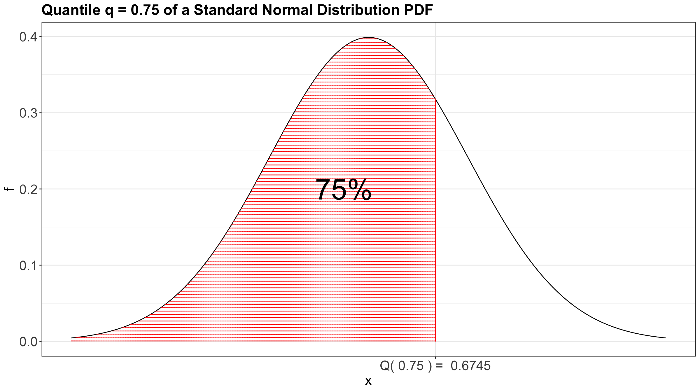
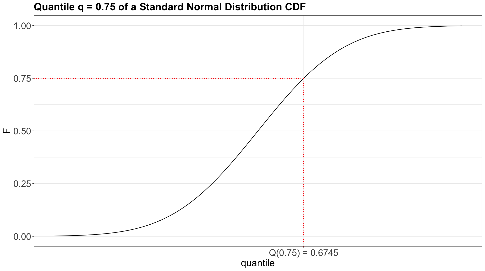
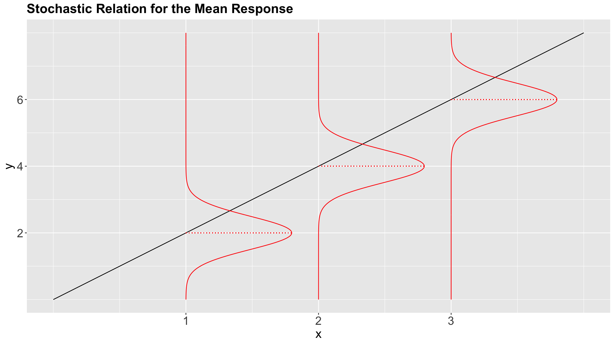
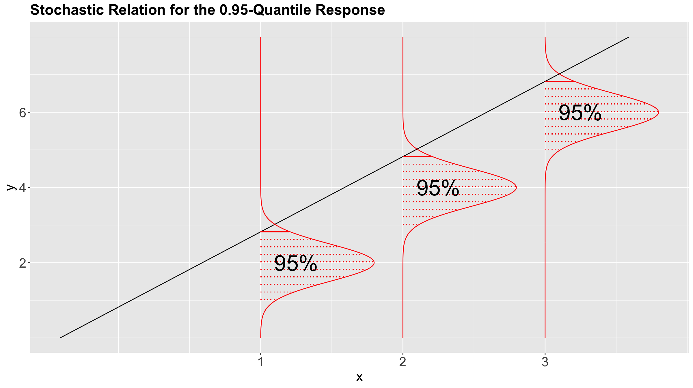
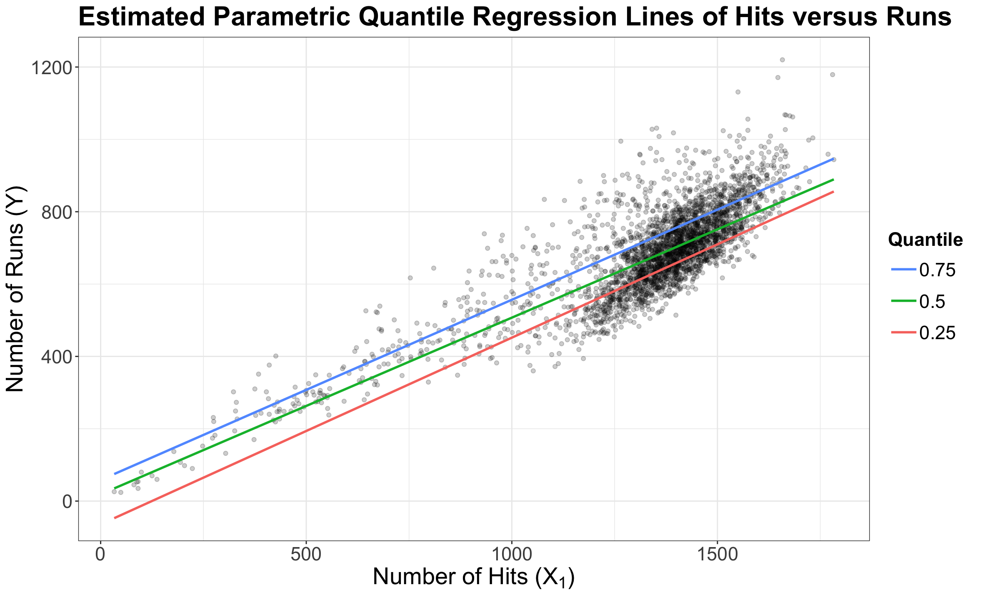
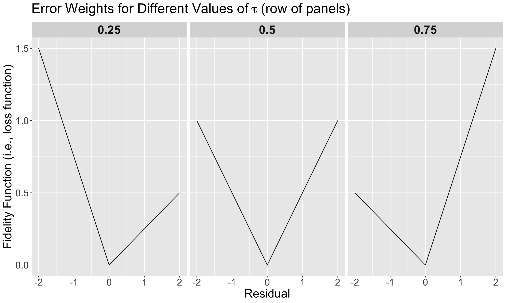

Lecture 7: Quantile Regression
1 Slides
2 Today’s Learning Goals
By the end of this lecture, you should be able to:
- Review what a quantile is.
- Compare the error functions of Ordinary Least-squares (OLS) regression versus Quantile regression.
- Recognize the impacts of parametric and distributional assumptions in Quantile regression.
- Perform non-parametric Quantile regression.
- Perform parametric Quantile regression.
We will close our regression mindmap in MDS with an approach on conditioned quantiles: Quantile regression. Note we will check two approaches: parametric (for inference and prediction) and non-parametric (for prediction).
{kind=link}
3 The Quantiles
Let us set up an initial example to recap what a quantile is. Suppose we measure the height of \(n = 1000\) randomly sampled UBC students. Here is the sample average in centimetres:
Exercise 25
By only using that single sample average, try to answer the following:
- How much do you know about the distribution of these
heights? - Is it a symmetric distribution?
- Is it a heavy-tailed-distribution?
- What is the variance of this distribution?
This is the reason why a boxplot is more meaningful than just jittered points.
Hence, let us get more information from the sample via summary() and var().
Exercise 26
What about now? Do we have a better idea about the distribution?
A. Yes, having different quantiles gives us a better idea about the distribution of heights.
B. Not, at all!
We can also make a quick histogram (with the sample mean as a vertical red line) or boxplot to confirm our previous statements.
3.1 Let us recall what a quantile is!
Suppose we have a random variable \(X\sim F_X(\cdot)\), i.e., \(X\) has a cumulative distribution function (CDF) \(F_X(\cdot)\). Then, the \(\tau\)-quantile (\(0\leq \tau \leq 1\)), is given by \(Q(\tau)\) such that
\[F_X[Q(\tau)]= P[X\leq Q(\tau)] = \tau.\]
In plain words, the quantile \(Q(\tau)\) is that observed value of \(X\) for which \(\tau \times 100\%\) of the population’s data is below (or the area under the curve on the left-hand side of a given \(x\), if we check the horizontal axis on the probability density function in the case of a continuous random variable).
As an example, we can check the case of the 0.75-quantile for the Standard Normal distribution using its probability density function (PDF) in Figure 2.

Moreover, Figure 3 also shows the 0.75-quantile for the Standard Normal distribution using the CDF where the cumulative probabilities are on the \(y\)-axis.

3.2 Motivation for Quantile Regression
In the OLS regression model, we were focused on the conditioned mean on the regressors:
\[ \mathbb{E}(Y_i \mid X_{i,j} = x_{i,j}) = \beta_0 + \beta_1 x_{i,1} + \ldots + \beta_k x_{i,k} \; \; \; \; \text{since} \; \; \; \; \mathbb{E}(\varepsilon_i) = 0. \]
Moreover, we already discussed that (from the statistical point of view) regression models follow a stochastic relation as shown in Figure 4.

Nonetheless, is it possible to go beyond the conditioned mean?
Given the stochastic nature of the relation between the response and explanatory variables, we have a whole conditional distribution of the response \(Y_i\), given the \(k\) explanatory variables \(X_{i,j}\).
Important
This whole conditional distribution allows us to regress our response with more than just the mean, such as the median or any other quantiles! Figure 5 shows the stochastic nature of the conditional distribution for the \(0.95\)-quantile.

Having said all this, let us pave to this new regression framework called Quantile regression.
4 Applications of Quantile Regression
In many practical cases, we have inferential questions that are related to quantiles and not the mean.
We might want to see if, at different levels, the response is affected differently by the explanatory variables:
How do driver’s years of experience affect buses’ travel time when considering the 25% fastest travels, 50% fastest travels, and 90% fastest travels?
How does the alcohol price affect the weekly consumption of light drinkers, moderate drinkers, and heavy drinkers at given cut-off values of alcohol consumption?
Furthermore, we might also be interested in a probabilistic prediction:
During December in Vancouver, with a 95% chance, what is the maximum snowfall threshold?
Important
This prediction will not be a confidence interval since we are talking about probabilities (i.e., chances). Therefore, we can use “probability” instead of “confidence.” Moreover, we would obtain prediction bands (to be explained later on in this lecture).
Note we can translate these inquiries with \(\tau\)-quantiles (\(\tau \in [0, 1]\)) along with the regressor \(X\) and response \(Y\):
How do driver’s years of experience (\(X\)) affect buses’ travel time (\(Y\)) when considering the 25% fastest travels (\(\tau = 0.25\)), 50% fastest travels (\(\tau = 0.5\)), and 90% fastest travels (\(\tau = 0.9\))?
How does the alcohol price (\(X\)) affect the weekly consumption (\(Y\)) of light drinkers (\(\tau = 0.25\)), moderate drinkers (\(\tau = 0.5\)), and heavy drinkers (\(\tau = 0.9\)) in given cut-off values in weekly alcohol consumption?
During December (\(X\)) in Vancouver, with a 95% (\(\tau = 0.95\)) chance, what is the maximum snowfall \((Y)\) threshold?
4.1 The Teams Dataset
For today’s lecture, we will use the Teams dataset from the Lahman package. It has \(n = 3075\) observations of 48 variables related to yearly statistics and standings for teams (one row per team) from different American baseball leagues.
Note
We can find the dataset’s website here:
This database contains complete batting and pitching statistics from 1871 to 2024, plus fielding statistics, standings, team stats, managerial records, postseason data, and more.
We will use the following columns:
-
runs: Runs scored, a count-type variable. -
hits: Hits by batters, a count-type variable.
Baseball intuition: Hits not equal to Runs
Quick definitions (baseball)
- Hit: When the batter makes contact and reaches at least first base safely because of the contact (e.g., a single, double, triple, or home run).
- Run: A point. A run is scored when a player eventually makes it all the way around the bases and reaches home plate.
Soccer analogy
If we have zero baseball background, let us think of these as:
- A hit is like successfully completing a forward pass that breaks a line (you advance the play and create a better scoring position).
- A run is like scoring a goal (the only thing that changes the scoreboard).
So hits are not equal to runs, just like good attacking play is not equal to goals. You can complete lots of dangerous forward passes and still finish with few goals if you do not convert chances.
Regression connection
If we are modeling something like goals scored in soccer, a regressor that measures “attacking actions” (entries, shots, key passes) can be strongly associated with goals (i.e, the response or outcome). Same as in baseball, runs are the response or outcome whereas hits are the regressor.
Main statistical inquiries
Let us suppose you are an American baseball enthusiast. Thus, you are interested in determining the following using this recorded data:
- Previous research has shown you that a large number of runs is associated with a large number of hits. Having said that, for those teams at the upper 75% threshold in runs, is this association significant? If so, by how much?
- For any given team that scores 1000 hits in a future tournament, how many runs can this team score with a 50% chance (centred around this future tournament’s median runs)?
4.2 Exploratory Data Analysis
Let us create a scatterplot of hits (our regressor) versus runs (our response), even though these variables are not continuous.
Attention
The upcoming Quantile regression approaches are meant for continuous responses in their most basic modelling frameworks. Nevertheless, by looking at the below scatterplot, runs behaviour resembles a continuous variable given its clear scatteredness. This class of behaviour is case-specific, and some other datasets whose response is a count would need an extra adjustment if it is much less scattered (see the optional material in Section 7).
The above plot shows a clear positive relationship between hits and runs. Nevertheless, we need to go further and fit our corresponding model to address our inquiries.
5 Parametric Quantile Regression
We can address inquiries (1) and (2) via parametric Quantile regression. But before digging into this model, it is necessary to recall some fundamentals from OLS.
In OLS, we use a linear combination on the right-hand sice to explain the conditional mean
\[ \mathbb{E}(Y_i \mid X_{i,j} = x_{i,j}) = \beta_0 + \beta_1 x_{i,1} + \ldots + \beta_k x_{i,k}; \]
and then find \(\hat{\beta}_0, \hat{\beta}_1, \dots, \hat{\beta}_k\) that minimize the squared error (loss function) in our training set of size \(n\)
\[ \sum_{i = 1}^n (y_i - \beta_0 - \beta_1 x_{i,1} - \ldots - \beta_k x_{i,k})^2. \]
5.1 General Modelling Framework
Suppose we have a random sample (or training data) of size \(n\) with responses \(Y_1, Y_2, \dots, Y_n\) where \(i = 1, 2, \dots, n\). Each \(i\)th response is subject to \(k\) regressors \(X_{i, 1}, X_{i, 2}, \dots, X_{i, k}\). Furthermore, we are interested in modelling the response’s \(\tau\)-quantile, where \(\tau \in [0, 1]\), conditioned on these \(k\) regressors in a linear combination with an intercept \(\beta_0(\tau)\) and \(k\) regression coefficients \(\beta_1(\tau), \beta_2(\tau), \dots, \beta_k(\tau)\):
\[ Y_i = \underbrace{\beta_0(\tau) + \beta_1(\tau) X_{i,1} + \beta_2(\tau) X_{i,2} + \ldots + \beta_k(\tau) X_{i,k}}_{\text{Systematic Component}} + \underbrace{\varepsilon_i(\tau).}_{\text{Random Component}} \tag{1}\]
Important
In Equation 1, \(\beta_j(\tau)\) (for \(j = 0, 1, 2, \dots, k\)) means that the regression term depends on the quantile \(\tau\), which is the desired quantile. In other words, for each quantile, we (might if our inquiry dictates so!) have a different regression function on the right-hand side of our modelling equation.
Finally, we still have a random component for the \(i\)th observation (as in OLS) represented as \(\varepsilon_i(\tau)\), which also depends on the quantile \(\tau\). Nonetheless, this random component is distribution-agnostic.
Definition of a distribution-agnostic random component
In Regression Analysis, a model with a distribution-agnostic random component does not assume any particular probability distribution a priori. Still, we assume an unspecified probability distribution on this component.
Let us make some mathematical rearrangements in Equation 1, and put the random component on the left-hand side:
\[ \begin{gather*} \varepsilon_i(\tau) = Y_i - \underbrace{\left[ \beta_0(\tau) + \beta_1(\tau) X_{i,1} + \beta_2(\tau) X_{i,2} + \ldots + \beta_k(\tau) X_{i,k} \right]}_{\text{Systematic Component}}. \end{gather*} \tag{2}\]
Moreover, taking Equation 2 as a reference, Quantile regression must ensure the following global condition:
\[ P \left[ \varepsilon_i(\tau) < 0 \mid X_{i, 1}, X_{i, 2}, \dots, X_{i, k} \right] = \tau. \tag{3}\]
The probability expression in Equation 3 requires that the conditioned probability (on the regressors!) of any overprediction, i.e. when the difference between \(Y_i\) and the systematic component on the right-hand side of the Equation 2 is negative, must be equal to \(\tau\).
In a more practical setting, suppose you use the teams dataset to fit a Quantile regression of runs (\(Y\)) versus hits (\(X_1\)) on the response’s quantile \(\tau = 0.75\). Then, your regression equation for the \(i\)th observation becomes:
\[ Y_i = \underbrace{\beta_0(\tau = 0.75) + \beta_1(\tau = 0.75) X_{i,1}}_{\text{Systematic Component}} + \underbrace{\varepsilon_i(\tau = 0.75)}_{\text{Random Component}}, \]
which yields
\[ \begin{gather*} \varepsilon_i(\tau = 0.75) = Y_i - \underbrace{\left[ \beta_0(\tau = 0.75) + \beta_1(\tau = 0.75) X_{i,1} \right]}_{\text{Systematic Component}}. \end{gather*} \tag{4}\]
with
\[ P \left[ \varepsilon_i(\tau = 0.75) < 0 \mid X_{i, 1} \right] = \tau = 0.75. \tag{5}\]
Therefore, the estimated Quantile regression line with \(\hat{\beta}_0(\tau = 0.75)\) and \(\hat{\beta}_1(\tau = 0.75)\) must look like the red line of the below plot where we plot the regressor hits versus the response runs. The probability statement in Equation 5 indicates in practice that, below the estimated Quantile regression line, we will approximately have 75% of the observed points (i.e., a proportion of \(0.75\)). These 75% of points are those for which the difference between the observed response \(Y_i\) and the estimated systematic component of the Quantile regression is negative if we take Equation 4 into account.
Summarizing, a parametric Quantile regression will condition the \(\tau\)-quantile to \(k\) regressors in a linear combination with an intercept \(\beta_0(\tau)\) and \(k\) regression coefficients:
\[ \begin{equation} Q_i( \tau \mid X_{i,j} = x_{i,j}) = \beta_0(\tau) + \beta_1(\tau) x_{i,1} + \ldots + \beta_k(\tau) x_{i,k}; \end{equation} \tag{6}\]
and then find \(\hat{\beta}_0(\tau), \hat{\beta}_1(\tau), \dots, \hat{\beta}_k(\tau)\) that minimize the following error function (loss function)
\[ \begin{equation} \sum_{i} e_i[\tau - I(e_i < 0)] = \sum_{i: e_i \geq 0} \tau|e_i|+\sum_{i: e_i < 0}(1-\tau)|e_i| \end{equation} \tag{7}\]
Note that Equation 6, for a determined \(\tau\)-quantile, is analogous to the conditional expected value that OLS aims to model such as:
\[ \mathbb{E}(Y_i \mid X_{i,j} = x_{i,j}) = \beta_0 + \beta_1 x_{i,1} + \ldots + \beta_k x_{i,k}. \]
Important
Unlike OLS, where there is a single model fitting, any Quantile regression approach (either parametric or non-parametric) would require fitting as many models as quantiles we are interested in!
In the previous loss function from Equation 7, we have the following indicator variable:
\[ \begin{equation*} I(e_i < 0) = \begin{cases} 1 \; \; \; \; \mbox{if $e_i$ < 0},\\ 0 \; \; \; \; \mbox{otherwise;} \end{cases} \end{equation*} \]
where the residual is
\[e_i = y_i - \overbrace{\big[\hat{\beta_0}(\tau) + \hat{\beta_1}(\tau) x_{i,1} + \ldots + \hat{\beta_k}(\tau) x_{i,k}\big]}^{\hat{y}_i}\] \[e_i = y_i - \hat{y}_i\]
This error function is called fidelity (also known as check function or pinball loss function).
Definition of residual
In Statistics, once we observe a random component \(\varepsilon_{i}\), it becomes a residual \(e_i\).
To understand how the fidelity function works, using the teams dataset again, let us plot the three estimated parametric Quantile regression lines for quantiles \(\tau = 0.25, 0.5, 0.75\) (how to plot these lines along with obtaining their R model objects will be discussed later on in this lecture). In the plot below, our response \(Y\) is runs, whereas our regressor \(X_1\) is hits.

The above plot shows that the \(0.75\)-Quantile regression has the largest estimate for the intercept, followed by the \(0.5\)-Quantile regression. Finally, \(0.25\)-Quantile regression shows the smallest estimate for the intercept.
Important
Again, a fundamental characteristic of a \(\tau\)-Quantile regression (either parametric or non-parametric) is that we will practically have the \(\tau \times 100\%\) of our observed responses below our estimated regression line via \(\hat{\beta}_0(\tau), \hat{\beta}_1(\tau), \dots, \hat{\beta}_k(\tau)\).
Once we have seen this pattern on the estimated regression lines for quantiles \(\tau = 0.25, 0.5, 0.75\), let us check how the fidelity function from Equation 7 behaves so we can understand it more.
In general for \(k\) regressors, assume we have the same set of regressor values \(x_{i,1}, \dots, x_{i,k}\) in the panels from Figure 6 (\(\tau = 0.25, 0.5, 0.75\)). Moreover, we will have the corresponding set of estimates \(\hat{\beta}_0(\tau), \hat{\beta}_1(\tau), \dots, \hat{\beta}_k(\tau)\) by quantile \(\tau = 0.25, 0.5, 0.75\).
Having said all this, note that we have the values of the corresponding fidelity function from Equation 7 on the \(y\)-axis, whereas we have the corresponding values for the residual
\[e_i = y_i - \overbrace{\big[\hat{\beta_0}(\tau) + \hat{\beta_1}(\tau) x_{i,1} + \ldots + \hat{\beta_k}(\tau) x_{i,k}\big]}^{\hat{y}_i}\] \[e_i = y_i - \hat{y}_i\]
on the \(x\)-axis.

We will go panel by panel from left to right.
\(\tau = 0.25\)
Recall the residual is
\[e_i = y_i - \overbrace{\big[\hat{\beta_0}(\tau) + \hat{\beta_1}(\tau) x_{i,1} + \ldots + \hat{\beta_k}(\tau) x_{i,k}\big]}^{\hat{y}_i}.\]
Note that for low values of \(\tau\), we consider overpredicting
\[e_i = y_i - \hat{y}_i < 0\]
WORSE than underpredicting
\[e_i = y_i - \hat{y}_i > 0.\]
Note how steeper is the penalty (on the \(y\)-axis) when we overestimate (the negative part on the \(x\)-axis). So, we prefer to err on the side of underestimating (the positive part on the \(x\)-axis).
Important
Since we prefer to err on the side of underestimating in this scenario, to decrease the error function value even more we need to provide smaller estimated values for \(\hat{\beta_0}(\tau), \hat{\beta_1}(\tau), \dots, \hat{\beta_k}(\tau)\). In a 2-\(d\) scenario (\(Y\) versus a single \(X_1\) with \(\hat{\beta_0}(\tau)\) and \(\hat{\beta_1}(\tau)\) as regression parameters where there is a positive relationship between \(X_1\) and \(Y\)), this will pull down the estimated regression line in a plot.
\(\tau = 0.5\)
For \(\tau = 0.5\), we care equally about underpredicting and overpredicting. This corresponds to the median value.
\(\tau = 0.75\)
Recall the residual is
\[e_i = y_i - \overbrace{\big[\hat{\beta_0}(\tau) + \hat{\beta_1}(\tau) x_{i,1} + \ldots + \hat{\beta_k}(\tau) x_{i,k}\big]}^{\hat{y}_i}.\]
For high values of \(\tau\), it is the opposite. We consider underpredicting
\[e_i = y_i - \hat{y}_i > 0\]
WORSE than overpredicting
\[e_i = y_i - \hat{y}_i < 0.\]
Note how steeper is the penalty (on the \(y\)-axis) when we underestimate (the positive part on the \(x\)-axis). So, we prefer to err on the side of overestimating (the negative part on the \(x\)-axis).
Important
Since we prefer to err on the side of overestimating in this scenario, to decrease the error function on the \(y\)-axis even more we need to provide larger estimated values for \(\hat{\beta_0}(\tau), \hat{\beta_1}(\tau), \dots, \hat{\beta_k}(\tau)\). In a 2-\(d\) scenario (\(Y\) versus a single \(X_1\) with \(\hat{\beta_0}(\tau)\) and \(\hat{\beta_1}(\tau)\) as regression parameters where there is a positive relationship between \(X_1\) and \(Y\)), this will pull up the estimated regression line in a plot.
5.2 Estimation
If our linear systematic component has \(k\) regression parameters (intercept and coefficients), then our estimated Quantile regression function will interpolate \(k + 1\) points. For example, if we are fitting a line \(Q_i( \tau | X_{i, 1} = x_{i, 1}) = \beta_0(\tau) + \beta_1(\tau) x_{i, 1}\), we are estimating two parameters: \(\hat{\beta}_0(\tau)\) and \(\hat{\beta}_1(\tau)\). So, our fitted line passes through two points.
As we already mentioned, when we use the \(\tau\)-quantile with a training set of size \(n\), approximately \(n \times \tau\) points will be under the curve and \(n \times (1 - \tau)\) will be above the curve. For instance, if we have \(n = 100\) points to fit the \(0.7\)-quantile, then:
- The number of points above the line will be approximately 30.
- The number of points below the line will be approximately 70.
The “approximately” comes because we will have \(k + 1\) points ON the estimated regression function.
Let us consider the teams dataset again. In this example, we will estimate the quantiles of runs as a linear function of hits. Below, you can find the code to obtain these estimated \(0.25\), \(0.5\), and \(0.75\)-quantile regression lines (via geom_quantile()). This code shows the same plot we saw beforehand.
Furthermore, from quantreg package, we will use the rq() function to fit the parametric Quantile regression at \(\tau = 0.25, 0.5, 0.75\). It has a formula argument as the previous fitting functions along with data. This function also allows us to fit as many Quantile regressions as we want via tau.
Important
As in the case of OLS, modelling estimates are obtained via an optimization procedure which minimizes the fidelity function from Equation 7.
To get the modelling output in a non-tidy() format, we use the function summary() as shown below. Note there is more than one way to obtain the standard errors and \(p\)-values of the regression estimates. For the purpose of this course, we will use the pairwise bootstrapping method via the arguments se = "boot" and bsmethod = "xy". Specifically, for this example, we will use R = 1000 replicates in function summary().
In a general case with \(k\) regressors and a response \(y_i\) (for \(i = 1, 2, \dots, k\)) for a training set of size \(n\) for the \(\tau\)-quantile, the pairwise bootstrapping method resamples with replacement \(n\) data points \((x_{i, 1}, x_{i, 2}, \dots, x_{i, k}, y_i)\) from the original training set and refit the \(\tau\)-Quantile regression model R times (which are the bootstrapping replicates). Roughly speaking, the method is a bit similar to the percentile method from DSCI 552 (but not the same!) which delivers confidence intervals (CI) for our modelling estimates.
Note
More information about this method can be found in the function’s documentation.
Finally, by default (and in a really misleading way!), the name of the test statistic (which is the ratio between the estimate in column Value and the standard error in column Std. Error) is named t value, and the empirical \(p\)-value is named Pr(>|t|). That said, for the pairwise bootstrapping method, the \(t\)-distribution is not used at all!
5.3 Inference
In terms of inference, we use the fitted model to identify the relationship between the \(\tau\)-quantile in our response and regressors. We will need the \(j\)th estimated regression parameter \(\hat{\beta}_j(\tau)\) and its corresponding variability which is reflected in the boostrapped standard error of the estimate, \(\mbox{se}\left[\hat{\beta}_j (\tau) \right]\). To determine the statistical significance of \(\hat{\beta}_j(\tau)\), we use the test statistic
\[t_j = \frac{\hat{\beta}_j(\tau)}{\mbox{se}\left[\hat{\beta}_j (\tau) \right]}\]
to test the hypotheses
\[ \begin{gather*} H_0: \beta_j(\tau) = 0 \\ H_a: \beta_j(\tau) \neq 0. \end{gather*} \]
As discussed above, we can obtain the corresponding empirical \(p\)-values for each \(\beta_j(\tau)\) associated with the \(t\)-values under the null hypothesis \(H_0\). The smaller the \(p\)-value, the stronger the evidence against the null hypothesis \(H_0\) in our sample. Hence, small \(p\)-values (less than the significance level \(\alpha\)) indicate that the data provides evidence in favour of association (or causation in the case of an experimental study!) between the \(\tau\)-quantile in our response and the \(j\)th regressor.
Let us recall our inquiry (1):
- Previous research has shown you that a large number of runs is associated with a large number of hits. Having said that, for those teams at the upper 75% threshold in runs, is this association significant? If so, by how much?
This inferential question corresponds to the estimated \(0.75\)-Quantile regression:
Our sample gives us evidence to reject \(H_0\) (\(p\text{-value} < .001\)). So hits is statistically associated to the \(0.75\)-quantile of runs.
Note
It is also possible to obtain confidence intervals (CIs) for each regression estimate. That said, not all the inferential methods for quantile regression offer this option, and bootstrapping is one of them. For instance, the rank method in summary.rq() allows us to obtain the CIs:
“rank” which produces confidence intervals for the estimated parameters by inverting a rank test as described in Koenker (1994). This method involves solving a parametric linear programming problem, and for large sample sizes can be extremely slow, so by default it is only used when the sample size is less than 1000, see below. The default option assumes that the errors are iid, while the option iid = FALSE implements a proposal of Koenker Machado (1999). See the documentation for rq.fit.br for additional arguments.
5.4 Coefficient Intepretation
We can quantify the statistical association of hits and the \(0.75\)-quantile of runs via the corresponding \(\hat{\beta}_1(0.75)\).
The interpretation is:
For each one hit increase, the \(0.75\)-quantile of runs will increase by 0.5.
Important
In general, coefficient interpretation works as in OLS (for continuous and categorical regressors). Nevertheless, this interpretation will be targeted towards the \(\tau\)-quantile of the response, not the mean.
5.5 Predictions
Now, let us check our inquiry (2):
- For any given team that scores 1000 hits in a future tournament, how many runs can this team score with a 50% chance (centred around this future tournament’s median runs)?
We can obtain this prediction via our \(0.25\) and \(0.75\)-Quantile regressions with predict().
Thus, our predictive inquiry can be answered as: “for any given team that scores 1000 hits in a future tournament, it is estimated to have a 50% (\(0.75 - 0.25 \times 100\%\)) chance to have between 452 and 557 runs.”
Important
This is a probabilistic prediction!
Note we could also say that this team:
- has a 25% (\(1 - 0.75 \times 100\%\)) chance of achieving over 557 runs,
- has a 25% (\(0.25 \times 100\%\)) chance of getting less than 452 runs,
- and would typically get 507 runs (median).
6 Non-Parametric Quantile Regression
The predictive inquiry (2) can also be dealt with via non-parametric Quantile regression. This class of Quantile regression implicates no model function specification (i.e., a linear combination such as the systematic component in the parametric Quantile regression). The core idea is to allow the model to capture the local behaviour of the data (i.e., capturing its local structure).
A non-parametric Quantile regression relies on what we call splines. A spline is a mathematical function that is composed of piecewise polynomials. Statistically speaking, in Regression Analysis, we use splines as another form of local regression.
Note
The math behind this non-parametric model is a bit intricate, and it will be out of the scope of this course. If you would like to check the model more in detail, you can check the original paper called Quantile Smoothing Splines by Koerner et al. (1994).
6.1 General Modelling Framework
As in the modelling approaches we saw in lecture6, the struggle is choosing how local our model should be. In other words, what is the neighbourhood of a point \(x\)? A certain parameter will control this. We will call it lambda, a penalization parameter:
- A small neighbourhood (i.e., a small
lambda) will provide a better approximation, but with too much variability – the model will not be smooth, and we might be prone to overfitting. - A too-large neighbourhood (i.e., a big
lambda) will lose local information favouring smoothness, going towards a global model, and we might be prone to underfitting.
6.2 Estimation
In R, non-parametric Quantile regression is performed using the function rqss() from library quantreg. It also works somewhat similarly to what we are used to with the lm() and glm() functions.
However, in rqss(), each regressor must be introduced in the formula using the qss() function (as additive non-parametric terms). For example, qss(x, lambda = 3).
The syntax would be:
rqss(y ~ qss(x, lambda = 3), tau = 0.5, data = my_data)We use rqss() to run a non-parametric Quantile regression with runs as the response and hits as the regressor. For the sake of our previous predictive inquiry, we use a tau = 0.25 and tau = 0.75:
- For any given team that scores 1000 hits in a future tournament, how many runs can this team score with a 50% chance (centred around this future tournament’s median runs)?
Note rqss() does not allow multiple values for tau. Therefore, we fit a model per tau value. Here, we try a lambda = 100.
Then, we plot the two model functions on the data plot. This is basically our prediction band (which can also apply to our parametric models!).
What if we use lambda = 10? Our estimated functions will not be that smooth anymore, there will be more variability on the prediction.
Note
The output from rqss() via summary() still indicates the non-parametric model has an (Intercept) whose statistical significance is tested via a \(t\)-value along with the approximate significance of qss terms via an \(F\)-value. However, the function’s documentation indicates the following about the summary of this class of model:
This is a highly experimental function intended to explore inferential methods for
rqssfitting. The function is modeled aftersummary.gamin Simon Wood’s (2006)mgcvpackage. (Of course, Simon should not be blamed for any deficiencies in the current implementation. The basic idea is to condition on the lambda selection and construct quasi-Bayesian credibility intervals based on normal approximation of the “posterior,” as computed using the Powell kernel estimate of the usual quantile regression sandwich. Seesummary.rqfor further details and references. The function produces a conventional coefficient table with standard errors t-statistics and p-values for the coefficients on the parametric part of the model, and another table for additive nonparametric effects. The latter reports F statistics intended to evaluate the significance of these components individually. In addition the fidelity (value of the QR objective function evaluated at the fitted model), the effective degrees of freedom, and the sample size are reported.
The above disclaimer refers to summary.gam(), which is the summary for modelling outputs related to Generalized Additive Models (GAMs). GAMs are another class of regression models where we can estimate a systematic component non-linearly. You can find fair introductory material on GAMs here.
As a sanity check, let us calculate the proportion of points below these estimated regression functions with \(\lambda = 10\).
6.3 Prediction
Suppose that we go ahead with the non-parametric models with \(\lambda = 10\), then we obtain the corresponding probabilistic interval:
Thus, our predictive inquiry can be answered as:
For any given team that scores 1000 hits in a future tournament, it is estimated to have a 50% (\(0.75 - 0.25 \times 100\%\)) chance to have between 491 and 625 runs.
Important
Having said all this regarding parametric and non-parametric Quantile regressions, you might wonder: when to use what?
In general, non-parametric Quantile regression might be adequate for predictive inquiries via non-linear training data. On the other hand, untangling an interpretable numeric association (or causation!) between our quantile response and some regressor would imply parametric Quantile regression.
7 (Optional) Quantile Regression and Discrete Data
We previously stated that to use Quantile regression with a count-type response, we would need to make extra adjustments if the response is much less scattered. Hence, let us introduce a dataset with this condition.
7.1 The Crabs Dataset
The data frame crabs (Brockmann, 1996) is a dataset detailing the counts of satellite male crabs residing around a female crab nest. The code below renames the original response’s name, satell, to n_males. We will work with the continuous carapace width as a regressor.

The Crabs Dataset
The data frame crabs contains 173 observations on horseshoe crabs (Limulus polyphemus). The response is the count of male crabs (n_males) around a female breeding nest. It is subject to four explanatory variables related to the female crab: color of the prosoma with four levels (categorical factor-type), the condition of the posterior spine with three levels (categorical factor-type), the continuous variables carapace width (cm), and weight (g).
7.2 Initial Model Estimation
Next, let us fit a sequence of parametric Quantile regression models for \(\tau = 0.2, 0.4, 0.6, 0.8\), then add the fitted values to the dataset. This is what geom_quantile() does behind the scenes.
Now, let us check the summary() of fit_rq_crabs with se = "boot", bsmethod = "xy", and R = 100 replicates
Note that the estimated \(0.2\)-Quantile regression is providing estimates at zero!
Finally, let us plot the data and our fitted models (one model for each quantile).
There are two important things to observe here:
- If we use lower quantiles, say less than 0.2, the quantile regression is fitting a horizontal line at zero.
- Observe the model fitted for \(\tau = 0.4\) and \(\tau = 0.2\). For low values of the carapace width, they cross paths.
Furthermore, note that around 36% in crabs_raw of the response n_males is 0. This is going to have an critical impact on the lower quantiles.
Now, let us fit another sequence of parametric Quantile regression models for \(\tau = 0.05, 0.1, 0.15, 0.2\) and estimate the standard errors of the estimates.
Note that we have standard errors equal to zero in our lower quantile \(\tau = 0.05\)! This does not make any sense from an inferential point of view. Hence, there must be a way to fix this as shown below.
7.3 Model Estimation via dither()
For discrete, count-type, and non-scattered \(Y\)s, you can use the dither() function from package quantreg package to introduce some random perturbation (i.e., inducing random noise). The argument type = "right" specifies we only want strictly positive perturbations (since we are dealing with counts).
Then, we plot our in-sample predictions.
We now have distinct lines for the low quantiles.
Important
Why was not this a big problem with the previous baseball-related dataset?
Because the counts in the dataset teams are mostly around 400 to 800, the points “behave similarly” to continuous data. However, we can (and should!) still use the dither() function in the teams model, and the results should be fairly similar (compare the output below with the one you obtained at the beginning with teams).
Let us refit our parametric Quantile regressions with tau = c(0.25, 0.5, 0.75) in dataset teams using dither() .
Then, if we compare them to our initial models, we can see that our modelling summaries are similar.
8 Wrapping Up
- We can extend the regression paradigm beyond the conditioned response mean.
- We could assess association (or causation under a proper experimental framework!) via different response statistics such as quantiles to a set of regressors.
- Quantile regression can be non-parametric (more suitable for predictions) or parametric (to allow for coefficient interpretation).